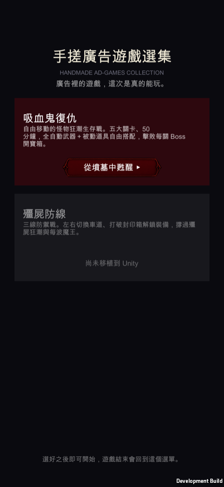
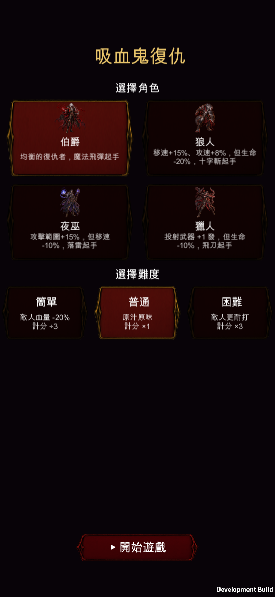

選集首頁 ／ 選角
已驗證

你點名的三個畫面都調過了，而且四張畫面都是在模擬 iPhone 靈動島的情況下實際跑出來拍的。選角那一頁順便解決了兩個「字放大之後才看得出來」的問題。




選角卡的說明文字原本是 20 級，換算到 iPhone 14 Pro 上實際是 7.3pt——系統內文標準是 17pt，iOS 介面裡最小的輔助文字也有 11pt。那確實不是「偏小」，是根本讀不了。現在是 30 級＝10.9pt，受限於卡片寬度只能到這裡，但配合下面的版面改動已經好讀很多。
| 項目 | 改前 | 改後 | iPhone 上實際大小 |
|---|---|---|---|
| 選集首頁 | |||
| 主標題 | 54 | 72 | 19.7pt → 26.2pt |
| 標語 | 26 | 36 | 9.5pt → 13.1pt |
| 卡片標題 | 40 | 52 | 14.6pt → 18.9pt |
| 卡片說明 | 23 | 32 | 8.4pt → 11.6pt |
| 開始按鈕 | 28 | 40 | 10.2pt → 14.6pt |
| 選角 | |||
| 標題 | 56 | 72 | 20.4pt → 26.2pt |
| 選擇角色／難度 | 30 | 44 | 10.9pt → 16.0pt |
| 角色名 | 26 | 40 | 9.5pt → 14.6pt |
| 角色說明 | 20 | 30 | 7.3pt → 10.9pt |
| 難度名 | 30 | 42 | 10.9pt → 15.3pt |
| 開始遊戲 | 34 | 46 | 12.4pt → 16.7pt |
| 暫停面板 | |||
| 四格數值 | 48 | 58 | 17.5pt → 21.1pt |
| 格子標籤 | 28 | 36 | 10.2pt → 13.1pt |
| 職業 | 32 | 40 | 11.6pt → 14.6pt |
| 區塊標題 | 34 | 42 | 12.4pt → 15.3pt |
| 武器名稱 | 30 | 34 | 10.9pt → 12.4pt |
| 繼續遊戲 | 40 | 48 | 14.6pt → 17.5pt |
新增了「只拍選單」的跑法：拍首頁 → 走跟手指點卡片同一條程式路徑進選角 → 拍選角。過程中抓到一個會讓驗證失效的問題——模擬靈動島的那行設定原本放在「開局」裡面，只看選單的驗證根本沒吃到，第一版首頁截圖看起來有讓開、其實位移是 0。移到最前面之後重拍，才是上面這幾張。
升級選擇、神秘商人、轉職、結算這幾個面板也有同樣的問題（最小的字在 20~24 級之間）。你點名的是三個畫面，我就先做這三個——要一起放大跟我說一聲，同一套做法直接套過去。
iOS 專案已重新匯出，在 Xcode 重新 build 到手機就會看到。簽章那件事上一輪已經修好，這次不用再設定。